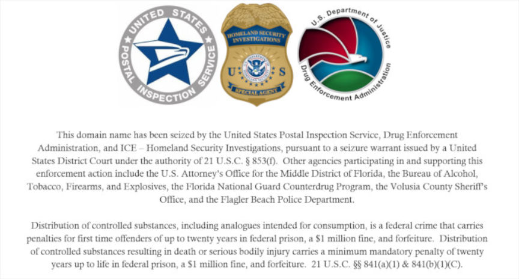
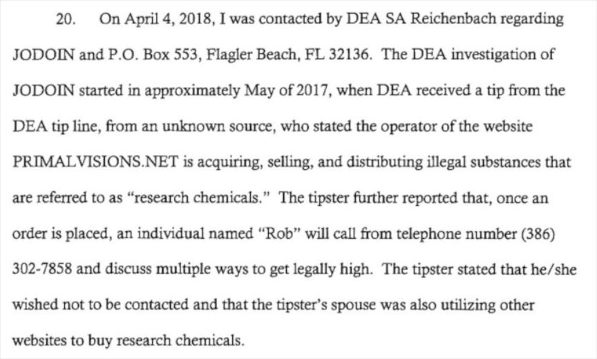
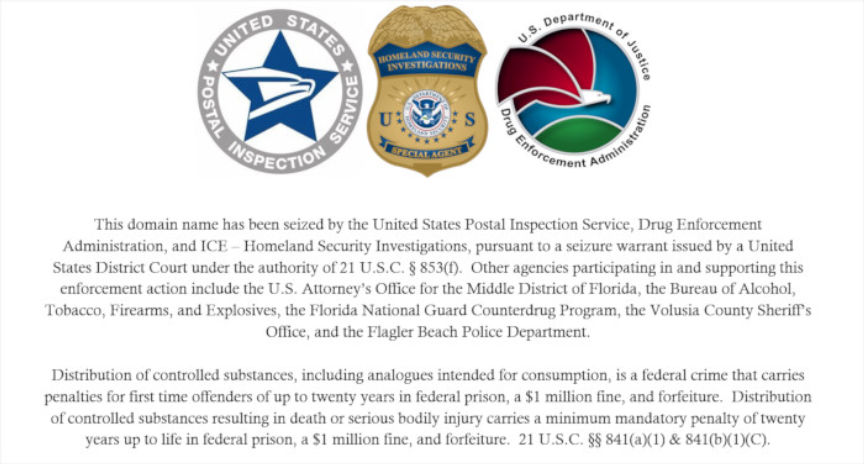
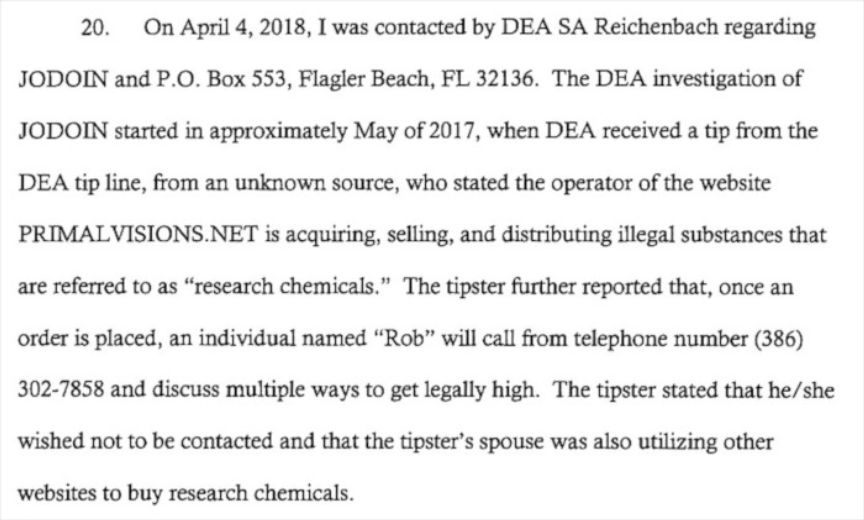

Research Chemical Vendor Sentenced to 130 Months in Prison
~4 min read | Published on 2019-05-14, tagged Darkweb-Vendor, Sentenced using 784 words.
A Florida man was sentenced to more than ten years in prison for selling research chemicals such N-Ethylhexedrone benzoyl fentanyl online. In addition to various research chemicals, the defendant also sold CBD, GHB, and clonazolam, among other substances.

Dude was selling fentanyl on his personal Facebook page 3 years ago. They sure took their time getting him. I’ve warned people against buying from him for years…literally years. He is a sadistic nutcase piece of shit.
-- A former customer on RedditSentencing
U.S. District Judge Marcia Morales Howard has sentenced Robert Richard Jodoin (50, Flagler Beach) to 10 years and 10 months in federal prison for importing GHB into the United States, distributing benzoyl fentanyl, possessing with the intent to distribute N-Ethylhexedrone, maintaining a residence for the purpose of distributing controlled substances, and possessing a firearm in furtherance of a drug trafficking crime.
The court also ordered Jodoin to forfeit the web domain PRIMALVISIONS.NET, which Jodoin had used to sell drugs. Jodoin had pleaded guilty on February 6, 2019.
According to court documents, the Drug Enforcement Administration (DEA), the United States Postal Inspection Service (USPIS), and Homeland Security Investigations (HSI) began investigating Jodoin. The investigating agencies discovered that multiple drug overdose victims around the country had purchased their drugs from Jodoin via his website. The investigation revealed that Jodoin was selling a wide array of controlled substances on his website, including fentanyl analogues. He routinely imported controlled substances from outside the United States, including, on one occasion, more than a kilogram of GHB. Information received from local law enforcement agencies revealed multiple overdose victims around the country had identified PRIMALVISIONS.NET as their drug source. One of the overdose victims told law enforcement that he had purchased fentanyl, methamphetamine, and ketamine from the website.
In May 2018, an undercover special agent with HSI purchased drugs from Jodoin.
Also in May 2018, during the time the undercover buy was being conducted, Jodoin posted an advertisement on PRIMALVISIONS.NET offering $1,300 to anyone who would beat up his girlfriend, and stated that she was “wanted dead or alive.” Jodoin also solicited the undercover agent via text message to “take out” his girlfriend.
Federal agents also learned that Jodoin was using the Flagler Beach Post Office to receive international drug shipments and to mail drug packages to his customers across the country. On May 26, 2018, a postal inspector was alerted that a package addressed to PRIMAL VISIONS had arrived from China. A border search of the parcel revealed that it contained more than 100 grams of N-Ethylhexedrone, a controlled substance analogue. On June 6, 2018, the package was scanned as available for pickup, and law enforcement observed as Jodoin traveled from his residence to the Flagler Beach Post Office. Upon arriving, Jodoin took possession of the package and was arrested as he exited the building.
Also on June 6, 2018, law enforcement officers executed a search warrant at Jodoin’s residence and located a drug packaging table with a mortar and pestle for grinding drugs, a drug scale, large quantities of USPS packaging materials, and drug dosing spoons and pipes. Next to the drug packaging table was a .380 caliber pistol, which was loaded.
Source: USDOJ
Previously:Arrest and Indictment
49-year-old Robert R. Jodoin faces a minimum of five years in prison and could be sentenced to life if convicted, according to information released today by the local office of the United States Department of Justice.
USDOJ Middle District of Florida officials say Jodoin sold his drugs through PrimalVisions.net and received packages filled with drugs at a post office box inside the U.S. Postal Service’s Flagler Beach location.
The criminal complaint shows U.S. Customs and Border Protection agents seized multiple packages shipped to that P.O. box from outside the country which had drugs inside, including one with over a kilogram of Gamma-Hydroxybutyric Acid, better known as GHB.
Agents with the Drug Enforcement Administration and Immigration & Customs Enforcement also believe Jodoin was shipping other kinds of drugs through that P.O. box to customers across the country, including methoxyacetylfentanyl and cathinone, which is better known as bath salts.
A search of Jodoin’s John Anderson Drive residence also turned up a .380 caliber handgun, other types of drugs and ledgers used for keeping track of drg sales and purchases, according to federal agents.
As part of the indictment, the U.S. government plans to seize control of PrimalVisions.net and a .380 caliber handgun found in Jodoin’s possession.
Also involved in the investigation were:
The Florida National Guard; The Volusia County Sheriff’s Office; and The Flagler Beach Police Department
Flagler County Jail records show Jodoin was arrested in May 2016 for possession of drug paraphernalia and marijuana possession under 20 grams. He was also booked again at FCJ in June and November of that same year for pretrial release violations.
Criminal Complaint 
PDF

Seized Site
Dude was selling fentanyl on his personal Facebook page 3 years ago. They sure took their time getting him. I’ve warned people against buying from him for years…literally years. He is a sadistic nutcase piece of shit.
-- A former customer on RedditSentencing
U.S. District Judge Marcia Morales Howard has sentenced Robert Richard Jodoin (50, Flagler Beach) to 10 years and 10 months in federal prison for importing GHB into the United States, distributing benzoyl fentanyl, possessing with the intent to distribute N-Ethylhexedrone, maintaining a residence for the purpose of distributing controlled substances, and possessing a firearm in furtherance of a drug trafficking crime.
The court also ordered Jodoin to forfeit the web domain PRIMALVISIONS.NET, which Jodoin had used to sell drugs. Jodoin had pleaded guilty on February 6, 2019.
According to court documents, the Drug Enforcement Administration (DEA), the United States Postal Inspection Service (USPIS), and Homeland Security Investigations (HSI) began investigating Jodoin. The investigating agencies discovered that multiple drug overdose victims around the country had purchased their drugs from Jodoin via his website. The investigation revealed that Jodoin was selling a wide array of controlled substances on his website, including fentanyl analogues. He routinely imported controlled substances from outside the United States, including, on one occasion, more than a kilogram of GHB. Information received from local law enforcement agencies revealed multiple overdose victims around the country had identified PRIMALVISIONS.NET as their drug source. One of the overdose victims told law enforcement that he had purchased fentanyl, methamphetamine, and ketamine from the website.
In May 2018, an undercover special agent with HSI purchased drugs from Jodoin.
Also in May 2018, during the time the undercover buy was being conducted, Jodoin posted an advertisement on PRIMALVISIONS.NET offering $1,300 to anyone who would beat up his girlfriend, and stated that she was “wanted dead or alive.” Jodoin also solicited the undercover agent via text message to “take out” his girlfriend.
Federal agents also learned that Jodoin was using the Flagler Beach Post Office to receive international drug shipments and to mail drug packages to his customers across the country. On May 26, 2018, a postal inspector was alerted that a package addressed to PRIMAL VISIONS had arrived from China. A border search of the parcel revealed that it contained more than 100 grams of N-Ethylhexedrone, a controlled substance analogue. On June 6, 2018, the package was scanned as available for pickup, and law enforcement observed as Jodoin traveled from his residence to the Flagler Beach Post Office. Upon arriving, Jodoin took possession of the package and was arrested as he exited the building.
Also on June 6, 2018, law enforcement officers executed a search warrant at Jodoin’s residence and located a drug packaging table with a mortar and pestle for grinding drugs, a drug scale, large quantities of USPS packaging materials, and drug dosing spoons and pipes. Next to the drug packaging table was a .380 caliber pistol, which was loaded.
Source: USDOJ
Previously:Arrest and Indictment
49-year-old Robert R. Jodoin faces a minimum of five years in prison and could be sentenced to life if convicted, according to information released today by the local office of the United States Department of Justice.
USDOJ Middle District of Florida officials say Jodoin sold his drugs through PrimalVisions.net and received packages filled with drugs at a post office box inside the U.S. Postal Service’s Flagler Beach location.
The criminal complaint shows U.S. Customs and Border Protection agents seized multiple packages shipped to that P.O. box from outside the country which had drugs inside, including one with over a kilogram of Gamma-Hydroxybutyric Acid, better known as GHB.
Agents with the Drug Enforcement Administration and Immigration & Customs Enforcement also believe Jodoin was shipping other kinds of drugs through that P.O. box to customers across the country, including methoxyacetylfentanyl and cathinone, which is better known as bath salts.
A search of Jodoin’s John Anderson Drive residence also turned up a .380 caliber handgun, other types of drugs and ledgers used for keeping track of drg sales and purchases, according to federal agents.
As part of the indictment, the U.S. government plans to seize control of PrimalVisions.net and a .380 caliber handgun found in Jodoin’s possession.
Also involved in the investigation were:
Flagler County Jail records show Jodoin was arrested in May 2016 for possession of drug paraphernalia and marijuana possession under 20 grams. He was also booked again at FCJ in June and November of that same year for pretrial release violations.
Criminal Complaint 